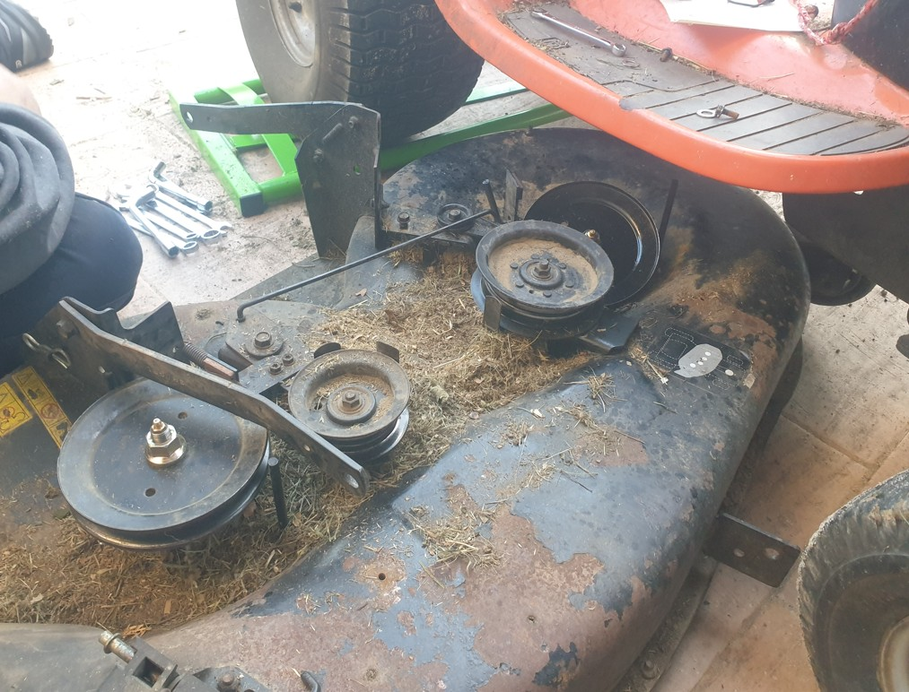
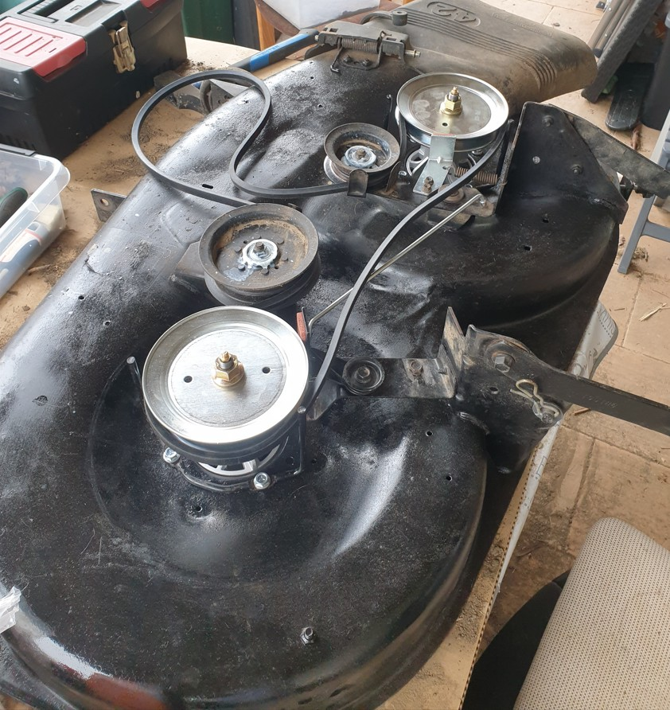

Restauration : Husqvarna LTH 171
Démontage, diagnostic et remise en état du système de coupe bi-lame d'une tondeuse autoportée

Objectif du projet personnel
Par passion pour la mécanique et l'ingénierie, je me suis lancé dans un projet personnel concret : Husqvarna LTH 171.
Les étapes d'intervention
Pour remettre la machine parfaitement à neuf de manière sécurisée et durable, j'ai procédé aux interventions suivantes :
- Analyse et Diagnostic : identification des causes de la panne.
- Démontage ordonné et inspection minutieuse des pièces : Repérage précis des composants endommagés.
- Interventions Mécaniques Précises : Rénovation complète du capot de coupe (traitement antirouille et peinture), remplacement des rotors de lames, des lames, des poulies de lames, des freins de poulies, de leur tige de couplage et du ressort de rappel. Mise en place d'une courroie d'entrainement des lames neuve, réglages des cablages (commande d'engagement de la coupe, hauteur de coupe).
Comparaison : Système de coupe

Avant
Après